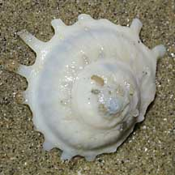
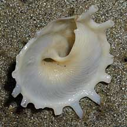
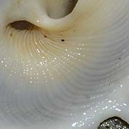
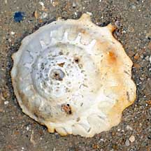
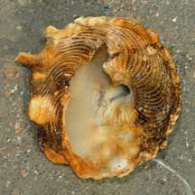
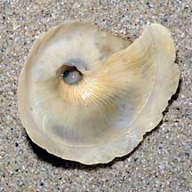

|
|
| shelled snails text index | photo index |
| Phylum Mollusca > Class Gastropoda > Family Turbinidae |
| Sunburst
carrier-shell snail Stellaria solaris Family Xenophoridae updated Sep 2020 Where seen? Only the empty shells of these snails have been seen washed up on our shores. It is considered uncommon and usually found in deep water. Features: 8-10cm in diameter. Shell flat coiled with 14 long spines on the last outer whorl. Underside with fine spiraling lines. Objects are rarely attached to the shell, except on early whorls. The Family Xenophoridae are called carrier shell snails because they cement bits of shells of other snails and clams onto their own shell. The living snail has a very long proboscis which it uses to attach these bits to its own shell. See a photo of a snail doing this. Sometimes confused with turban snails (Family Turbinidae). Unlike turban snails, carrier shell snails do not have shiny mother-of pearl on the inside of the shell. Human uses: Occasionally collected in shrimp trawls. The shell is used in shellcraft. |
 Tanah Merah, Mar 10 |
 Inside of the shell not shiny. |
 Fine lines on the underside. |
|
 Tuas, Aug 09 |
 Tuas, Aug 09 |
 Changi, Oct 10 |
| Sunburst carrier-shell snails on Singapore shores |
On wildsingapore
flickr
|
| Family
Xenophoridae recorded for Singapore from Tan Siong Kiat and Henrietta P. M. Woo, 2010 Preliminary Checklist of The Molluscs of Singapore.
|
|
Links
References
|